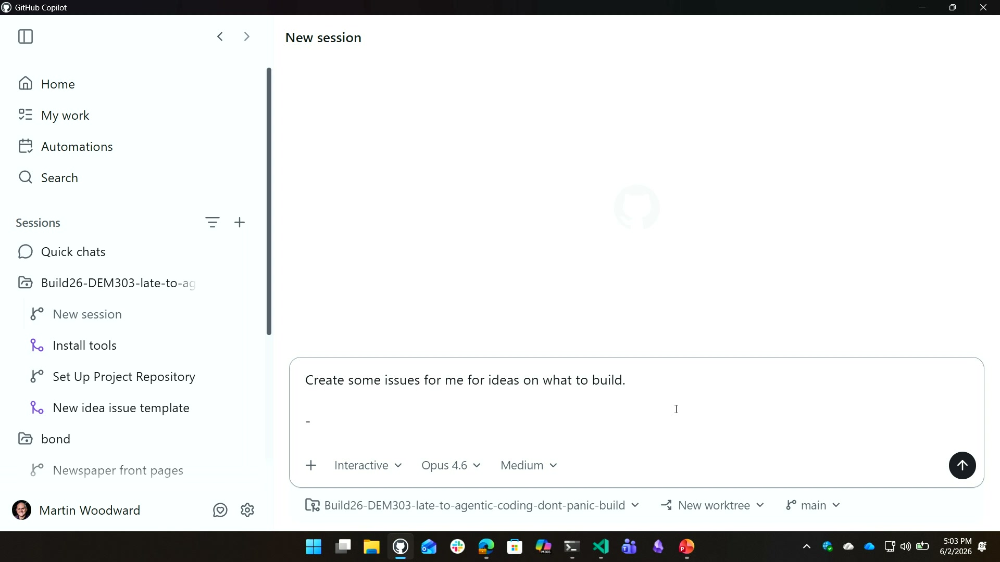
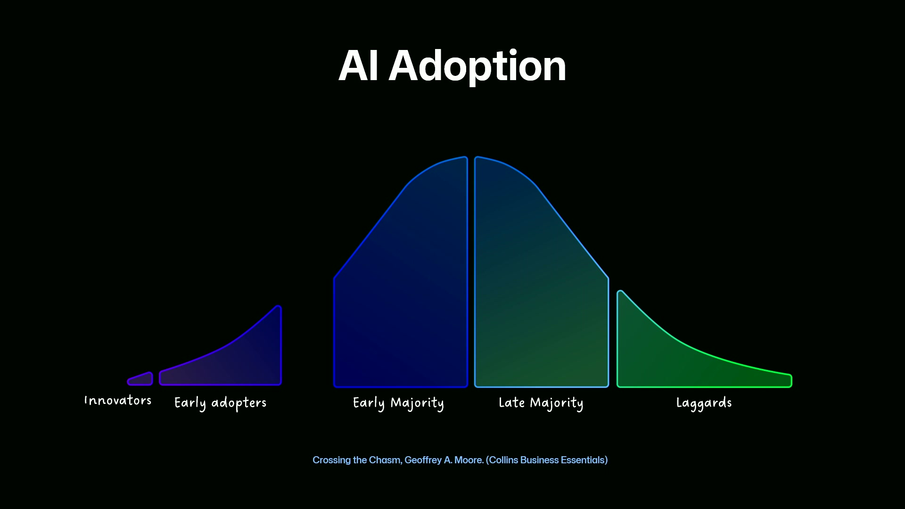
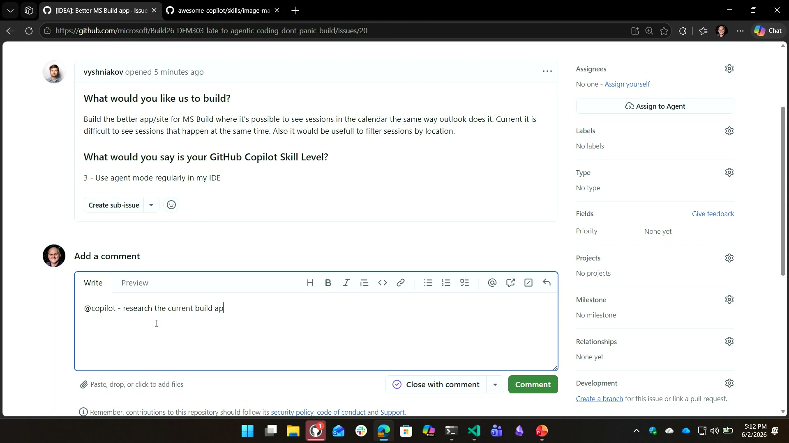
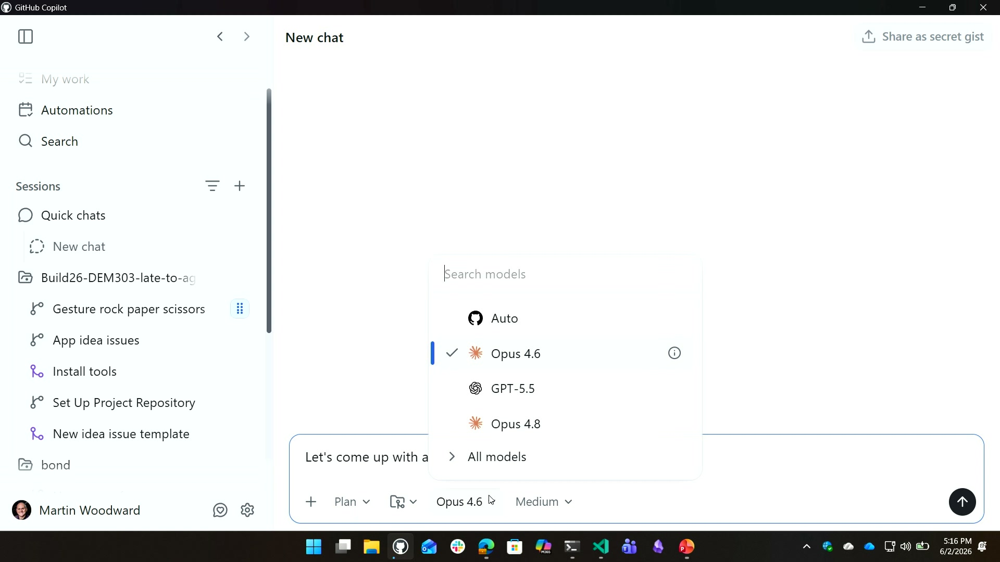
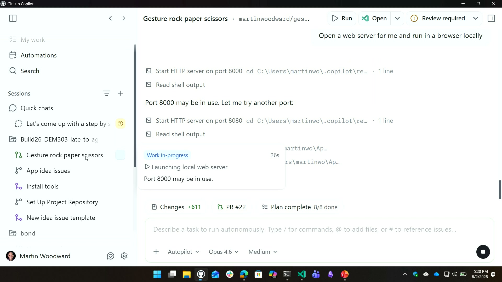

Late to agentic coding? Don’t panic, build.
Official description
Feeling behind on agentic coding? You’re not. In this demo-heavy session, we’ll show how to go from idea to shipped. You’ll see practical patterns for planning tasks, delegating implementation, reviewing AI-generated PRs, and shipping with guardrails. No hype - just real workflows you can apply with your team right away. Seating for this session is first-come, first-served. Add it to your schedule to plan your day and arrive early to secure a spot.
Summary
Overview
A demo-driven walkthrough of agentic coding workflows using GitHub Copilot, framed to reassure developers that the field is still early enough to shape. Cassidy Williams and Martin Woodward build apps live from audience-submitted ideas while demonstrating planning, model selection, plan mode, and shipping safeguards across the Copilot app, CLI, and web.
Key announcements
- GitHub Copilot app built on the Copilot CLI (approx. 00:02:55) — A desktop app running the same CLI engine and SDKs locally, fully integrated with GitHub so it live-pulls issues without refreshing.
- Issue-template awareness (approx. 00:11:10) — The Copilot app detected checked-in coding standards and an issue template, prefixing generated issues with the required
IDEA:format automatically. - Rubber duck cross-model review (approx. 00:18:53) — A feature that queries a different model family to vet a plan and find holes, described as producing a statistically significant improvement in results.
- Auto mode model routing (approx. 00:16:53) — Intelligently picks models by context to avoid burning expensive reasoning models on simple questions.
- Remote control via phone (approx. 00:24:29) — The
remote oncommand pipes back to a local agent so a long-running task can be monitored and controlled from a phone. - Chronicle command (approx. 00:25:01) — A newly landed command offering stand-up summaries and cost tips that advise on model choice and token efficiency based on usage.
Topics covered
- Positioning agentic coding adoption on the innovation-adoption curve and the differing needs of early adopters versus mainstream enterprise users.
- The importance of tool, model, editor, and workflow choice across an organization.
- Writing durable, quality code rather than becoming "slop factories," and building safeguards so less-experienced developers produce good output.
- The risk that AI removes learning-from-failure, and team practices to compensate.
- Plan mode, quick chats (sessions not attached to a repo), interactive vs. autopilot ("Yolo"/allow-all) modes.
- Work trees enabling parallel, non-conflicting builds.
- MCP servers (e.g., Playwright for screenshots and visual vetting), bring-your-own-key, and local models on Foundry.
- Copilot instructions files and Spec Kit for agent-native documentation and constraints.
Notable quotes
"Copilot is the number 1, 2 and 3 contributor to the GitHub codebase right now." — Martin Woodward
"The disadvantage of AI is you don't get to learn from failure like you once did in the past." — Cassidy Williams
"As developers, you still have to be in control, you still have to steer and you still have to point it in the right ways." — Martin Woodward
Products and tools mentioned
- GitHub Copilot
- GitHub Copilot app
- GitHub Copilot CLI
- VS Code
- Visual Studio
- GitHub coding agent (github.com/copilot)
- GitHub built-in code review
- Spec Kit
- Playwright (MCP server)
- MediaPipe [inferred] (caption: "media pie pants," for gesture recognition)
- Phaser (game framework)
- Azure AI Foundry [inferred] (caption: "Foundry," for local model hosting)
- GPT-5.5 [inferred] (caption: "GPT 55")
- Claude Opus 4.6 / 4.8 [inferred]
- Claude Haiku
- Chronicle command
Speakers featured
- Cassidy Williams — GitHub (presenter)
- Martin Woodward — GitHub (presenter)
Follow-up resources
- gh.io/dem303/idea — audience idea-submission form for the live build.
Frames





Transcript
Show / hide transcript (36,439 chars)
[00:00:00] It's all yours. [00:00:01] Thank you everybody. [00:00:02] How you doing? [00:00:05] So we're going to this is going to be a [00:00:06] fairly interactive session hopefully if we can, if it could. [00:00:09] So if you want to get your phones out, this [00:00:12] QR code here and we want your ideas because we [00:00:15] basically we're working on the keynote all day and then [00:00:18] we wanted to make sure we'd actually do some stuff. [00:00:21] So we're going to build some stuff live while also [00:00:24] trying to educate you. [00:00:25] So GH dot IO slash dem three O 3 slash [00:00:28] idea, if you don't get the QR code, you can [00:00:32] go straight to that URL. [00:00:34] I'm afraid you'll have to log in with GitHub on [00:00:36] your phone, which is the first sort of test of [00:00:38] the day, but it's good because that'll boost my numbers [00:00:41] in terms of getting people to log on. [00:00:42] So that's good. [00:00:44] So my name's Martin Woodward and. [00:00:46] I'm Cassidy Williams and. [00:00:47] What we're going to do is going to go through [00:00:50] talk about using GitHub copilot doing a gentic coding and [00:00:54] kind of you know, see how that goes. [00:00:58] We're going to get some ideas from you now, and [00:01:00] we're going to kick something off building and then we'll [00:01:02] do some talking and then we'll build some more and [00:01:03] do some talking. [00:01:04] Is what we're thinking about doing before we get started [00:01:06] can have a quick show of hands. [00:01:07] Who here is currently using GitHub Copilot, for example? [00:01:13] OK. [00:01:14] Thank goodness. [00:01:15] OK. [00:01:16] Who's using, say, agent mode? [00:01:20] Who's using it within VS Code mostly? [00:01:23] VS Code mostly OK. [00:01:25] OK, who uses the visual? [00:01:26] Studio I heard as. [00:01:27] Well, Visual Studio mostly sweet command line and then anyone [00:01:33] use the GitHub app yet? [00:01:35] That got talked about today. [00:01:37] It was very new. [00:01:38] We got one person. [00:01:39] Yeah. [00:01:40] Thanks bud. [00:01:42] Cool. [00:01:42] And then what about through the web? [00:01:45] Through like the coding agent. [00:01:47] Likegithub.com/copilot Any of those things. [00:01:50] We got a couple. [00:01:51] OK. [00:01:51] And then code review built in code review within github.com. [00:01:55] Code review handful. [00:01:56] That's interesting. [00:01:57] To know Cool. [00:01:57] Yeah, right. [00:01:59] So let's go and have a look if you go [00:02:01] there. [00:02:04] Going to switch. [00:02:05] So this is the repo that we're all in. [00:02:07] It is not showing it. [00:02:08] I think you have to stop the. [00:02:09] Presentation. [00:02:09] Sorry, hang a second custody. [00:02:11] Give me one SEC. [00:02:13] We're professionals. [00:02:14] People. [00:02:14] Yeah, OK, there we go. [00:02:15] Thank you. [00:02:16] So if we go to the repo, this is the [00:02:18] repo that we're working on. [00:02:20] All of the stuff from this repo, including where to [00:02:23] get more information, tools you should install, and things like [00:02:27] that, That's all here for you as well, but hopefully [00:02:31] we'll have some issues where we've got some we. [00:02:34] Got a we got. [00:02:35] An issue? [00:02:36] Let's go. [00:02:36] Let's go in and have a look. [00:02:38] Cool. [00:02:38] I don't know what that means. [00:02:40] Yeah. [00:02:41] We could try and collect some ideas. [00:02:43] How about we do that? [00:02:43] Do you want to do that? [00:02:45] Sure, so this is the GitHub Copilot app that I'm [00:02:49] showing you here. [00:02:51] Let me show you in light mode just to make [00:02:54] it more visible. [00:02:55] So while he while he pulls it up, it switches [00:02:57] it into light mode. [00:02:58] The app is built on top of the GitHub Copilot [00:03:00] CLI. [00:03:01] It's using all the SDKS and stuff. [00:03:02] And so it's the exact same engine on your machine [00:03:05] that's powering all the sessions and everything that's going. [00:03:09] And so you can kick off a session. [00:03:12] Yeah, we'll kick off a session. [00:03:13] So what I'm going to do is later what I'm [00:03:16] going to do here. [00:03:17] Let's make this bigger for you so you can see [00:03:22] it is create some issues for me for ideas on [00:03:26] what to build. [00:03:32] You got to use voice to text. [00:03:34] Oh, can I do? [00:03:34] I can't. [00:03:35] Is it control H is? [00:03:36] It yeah, it's command H or. [00:03:39] Windows H Here we go. [00:03:41] I see this works. [00:03:43] OK. [00:03:43] I can't be able to do that. [00:03:44] Doesn't matter, right? [00:03:45] Create some issues for me on ideas of what to [00:03:47] build. [00:03:49] One pillar. [00:03:50] There you go. [00:03:51] And right, OK, let's somebody shout out what would you [00:03:53] like to see us build? [00:03:55] Anyone. [00:03:57] What'd you say? [00:04:00] He just added one, so we've got some that coming [00:04:02] in. [00:04:06] Oh, for whiskey, review whiskey. [00:04:09] Whiskey review app. [00:04:10] That's a fun one. [00:04:12] IPA review app. [00:04:13] OK people, this is the end of the day, I [00:04:16] suppose. [00:04:16] It's 5:00 PM. [00:04:18] We're going to have a game, so let's do face [00:04:24] controlled breakout. [00:04:29] We could do. [00:04:30] We could do more gesture things too. [00:04:32] Did you like the thumbs up, thumbs down thing earlier? [00:04:34] We could do that. [00:04:35] Let's do gesture controlled ping pong. [00:04:40] Oh, that's fun. [00:04:43] Anybody else got an idea? [00:04:45] We'll just get a couple and then we're going to [00:04:47] do some. [00:04:47] Any other ones side scrolling platformer game? [00:04:53] OK, anybody else? [00:04:57] Cool, that'll do. [00:04:58] That'll do. [00:04:59] OK. [00:05:00] So that's going to go create some issues for us. [00:05:02] Now, while it's doing that, let's just cap off. [00:05:05] Let's just start this. [00:05:06] We're going to do our presentation. [00:05:07] There we go. [00:05:11] So as you know, as you saw in a keynote, [00:05:14] we know is genetic coding's really kicking off and we're [00:05:18] seeing massive, massive growth. [00:05:20] But if you are, and then, you know, as we [00:05:23] look, we're actually seeing the number of pull requests coming [00:05:26] from agents going through the roof as well. [00:05:30] If you look around the industry, I mean, I'm old, [00:05:34] you're not as old what you've been around. [00:05:38] And thanks. [00:05:39] Martin. [00:05:40] Experience, Yeah, there we go. [00:05:42] But it's, it's, it's the, I've never seen like the [00:05:46] last time I saw anything approaching this was during.com and [00:05:51] like that happened over a year or two. [00:05:54] And this is feels like it's happening within the last [00:05:56] six months kind of thing. [00:05:57] So it's it's definitely a brand new epoch in how [00:05:59] we're actually building and how we're doing things. [00:06:02] We obviously use copilot extensively here at GitHub for building [00:06:07] GitHub and for building copilot. [00:06:09] So if we actually have a look, Copilot is the [00:06:13] number 12 and 3 contributor to the GitHub Co base [00:06:16] right now in terms of building, you know, as it [00:06:20] should be. [00:06:21] And one of the kind of questions I wanted to [00:06:24] ask you was if, if GitHub copilot you all, nearly [00:06:28] everybody here already uses copilot if it isn't the number [00:06:32] one contributor to your code bases at work. [00:06:34] Why is that? [00:06:35] That's an interesting question, because it can work 24/7. [00:06:39] It can do stuff overnight like why? [00:06:41] Why isn't it contributing more? [00:06:42] What can we do there to help you adopt it [00:06:44] in your team? [00:06:47] However, the thing like you're all here because it said, [00:06:49] do you feel like you're late to the agent coding [00:06:52] party kind of thing. [00:06:54] This is the standard like Moore's innovation curve. [00:06:57] You know, this is this is these are the people [00:07:00] on Twitter going blah, blah, blah. [00:07:03] You know, these are the people that make you feel [00:07:05] like you're late to the party. [00:07:07] You're at build for crying out loud. [00:07:09] You are in this section here in the early adopters [00:07:13] and maybe broaden up to early majority and like kind [00:07:16] of crossing over here. [00:07:18] The people back in your office, they're all over here. [00:07:22] Yeah. [00:07:23] And so what's actually interesting is not just where you [00:07:26] are in this curve and where it feels, but also [00:07:29] understanding that the needs of these people are very different [00:07:34] to the needs of the people over here. [00:07:36] For example, if you're any innovators or if you're early [00:07:40] adopters, you will completely change how you work to suit [00:07:43] the tool because you're trying to get the most out [00:07:46] of the latest and cool tools. [00:07:48] That's not going to happen in your organisations. [00:07:50] You know, if if somebody can't use a random version [00:07:54] of Eclipse to talk to Copilot, they're never going to [00:07:57] use Copilot or AI. [00:07:58] You know what I mean? [00:07:59] The people have got stuff in their tools that they're [00:08:02] going to want to use and so what's needed inside [00:08:05] your organization difference as well, which is why choice is [00:08:08] so important across your entire company. [00:08:10] There was a study that Microsoft did recently saying that [00:08:14] 84% of developers are using AI, are using it, nearly [00:08:18] dated Lee, which is wild. [00:08:20] But at the same time, that same study, it's flipped [00:08:23] in terms of the entire world outside of the tech [00:08:26] industry, 84% of people have never touched it. [00:08:30] And so when you think about that, again, just being [00:08:33] here, being on that side of the curve, you are [00:08:35] not only early to it, even if you're just dabbling [00:08:38] in it, you're also at this point where you can [00:08:40] shape the you can be the change you want to [00:08:43] see in the world and shape the way these tools [00:08:45] are going and develop practices and stuff. [00:08:47] As cheesy as that sounds, because so much of the [00:08:50] world has yet to catch up, the things that we're [00:08:53] building here and talking about here is something that is [00:08:56] going to be impacting so many people in the world. [00:08:59] But we're very, very early. [00:09:00] And it's very, very early, even though it feels like [00:09:02] everybody's already in it. [00:09:04] OK. [00:09:05] And then let's stay on this bit. [00:09:08] Yeah, as we all know, writing code's never been faster. [00:09:11] And this is what you were saying in the keynote. [00:09:13] Like just emitting code's fine. [00:09:16] You're writing so much and you're creating so much. [00:09:20] There's mass volumes and open source repos constantly and just [00:09:23] being put out there, but it's not always being merged [00:09:26] and it's not actually being committed a good percentage at [00:09:30] a time. [00:09:30] Yeah. [00:09:31] So how do we actually build code that's going to [00:09:33] last? [00:09:34] How do we make sure when we don't become like [00:09:36] slot factories, you know what I mean? [00:09:39] And what you'll notice is like experienced devs, like Co [00:09:42] pilots, rocket fuel to experienced devs. [00:09:45] But we, we also need to make sure is we [00:09:47] build in the safeguards and the, the skills and the [00:09:50] instructions so that everybody in your org is creating code [00:09:54] of decent quality, not just the experienced devs. [00:09:56] You know, I think that's probably. [00:09:58] Quite a big thing that I think we also want [00:10:00] to drill home to is like, yes, we're all building, [00:10:03] we're all learning and and doing all of that. [00:10:05] But the disadvantage of AI is you don't get to [00:10:09] learn from failure like you once did in the past. [00:10:13] And so that's something that we have to kind of [00:10:15] talk with our teams about and figure out how can [00:10:18] we continue to communicate and learn from each other in [00:10:21] ways where we can learn these tools better? [00:10:24] Learn things, yes, like the right way, but also bring [00:10:26] people up in the industry who don't have that experience [00:10:30] and who don't know how to hold it correctly and [00:10:32] use things well. [00:10:34] Sorry, I was just, I was just flipping because I [00:10:36] was seeing. [00:10:36] I've got some there's some quite amusing answers have come [00:10:39] in. [00:10:39] Yeah, no, it's all good. [00:10:40] And then, yeah, as I say, choice is important. [00:10:43] And that's not just model choice. [00:10:45] That's not just choice of how you talk to your [00:10:48] agents, if it's through a CLI, if it's through the [00:10:51] web, if it's through your IDE, but also, yeah, which [00:10:54] editor you use, which workflows you want to use. [00:10:58] OK, we get to code. [00:10:59] OK, now it's coding time, right? [00:11:01] What did the session do? [00:11:02] What? [00:11:03] What issues were made? [00:11:04] Let's have a quick look. [00:11:05] So we've got some amazing ones here and we've got [00:11:08] someones that we also submitted. [00:11:10] Now notice I asked to create here. [00:11:16] I asked it to create a bunch of issues for [00:11:20] me, but you notice how it prefixed it with IDEA:. [00:11:23] Blah. [00:11:24] That's because the GitHub Copilot app was smart enough to [00:11:29] go and check and notice that I had coding standards [00:11:33] checked in. [00:11:34] So I actually have an issue template. [00:11:36] So when I'm creating a new idea, I have a [00:11:39] form I want to fill in for new ideas. [00:11:41] And Copilot was smart enough to detect that, and it [00:11:44] actually uses it. [00:11:46] And that's one of the great things about the Copilot [00:11:48] app is that it's fully integrated with GitHub, which I [00:11:50] didn't know it would do. [00:11:51] So that's pretty awesome. [00:11:52] I'm so glad it did it correctly. [00:11:54] Right. [00:11:54] Which one do you want to tackle? [00:11:55] And I'll OK. [00:11:56] Let's look at some of the ideas. [00:11:57] OK, oops, sorry, which? [00:12:01] One, there were some that we created and those are [00:12:05] the ones with enhancement gesture. [00:12:07] Rock, paper, scissors. [00:12:08] That's fun. [00:12:08] That's not. [00:12:08] Well, that's really fun. [00:12:09] What we can do is how about we go build [00:12:11] that one ourselves? [00:12:12] Live for this build a better Ms. [00:12:14] Build app. [00:12:15] That sounds like pretty relevant. [00:12:17] That's fair. [00:12:18] So what we're going to do with this is we're [00:12:23] going to say at Copilot, research the current build application [00:12:30] for Ms. [00:12:31] Build, I should have done voice and the and give [00:12:40] me ideas for a better app, iOS and Android, please. [00:12:50] Oops. [00:12:51] Whatever. [00:12:53] It understands your typos. [00:12:54] Yep. [00:12:54] Right. [00:12:55] So while that's working and Co pilot's going to go [00:12:58] do the research and and look at stuff, it'll come [00:13:00] up in a minute and give it a little lies [00:13:03] and do it. [00:13:04] That's how you use copilot through the web. [00:13:06] You basically can at copilot or you can assign to [00:13:09] copilot and then it can be involved in the conversation [00:13:12] and do things for you and you can kind of [00:13:14] delegate activity you see there. [00:13:17] We can just hit assign, we don't even need a [00:13:19] prompt. [00:13:19] Yeah, yeah, cool. [00:13:21] Right. [00:13:22] So that's going to go do though it, right. [00:13:23] Let's go build 1 live. [00:13:25] Which one? [00:13:25] OK. [00:13:25] Sorry, let's go to the app which. [00:13:29] One was it, It was gesture pot of scissors. [00:13:31] Do you want to do it from the app? [00:13:32] Let's do it from the app, OK? [00:13:33] Do you want to do it from the app or [00:13:35] the CLI? [00:13:35] Let's take votes. [00:13:36] Who wants to do it from the? [00:13:38] Who wants to do it from VS Code? [00:13:41] VS Code? [00:13:42] Who wants to do it from the CLI? [00:13:45] Much. [00:13:45] Probably less. [00:13:46] And then who wants to do it from the app? [00:13:49] There you go. [00:13:50] You were right. [00:13:50] Go on. [00:13:51] You take me away, Cassidy. [00:13:52] I know. [00:13:53] So hey, we talked about my work. [00:13:55] This has oh, you have so much work to do. [00:13:57] I'm not going to look at that. [00:13:58] OK, let's go into the issues. [00:14:01] Let's see we had issue number. [00:14:02] What was the issue for that? [00:14:05] The number was if you bring. [00:14:07] Up the# It'll show you but. [00:14:10] That was number 19, Yeah. [00:14:11] OK. [00:14:12] So we're going to go there and we're going to [00:14:15] say let's come up with the plan for issue #19 [00:14:18] and it pulls that in. [00:14:20] You notice we didn't have to refresh the app or [00:14:22] anything. [00:14:23] It's live pulling in all of the issues that come [00:14:25] in. [00:14:26] And then we're going to come up with a plan. [00:14:28] You can set the the amount of reasoning, probably should [00:14:31] have set it to low, but it's OK. [00:14:33] You can set the amount of reasoning. [00:14:34] You can choose which models that you want to use. [00:14:36] We have all of the different model providers and stuff. [00:14:39] And you could even use bring your own key or [00:14:41] bring in local models if you have any hosts on [00:14:43] Foundry, which is works well as well. [00:14:46] There's also this interactive mode. [00:14:47] This is a step by step collaboration. [00:14:49] We could have changed this to plan mode or we [00:14:52] could have just said just go do it. [00:14:54] And that's what autopilot is. [00:14:55] The slash command for that in the CLI is Yolo [00:14:58] or you could do allow all, but that just says [00:15:00] I want you to do it go and then you [00:15:02] can come back later to a finished product. [00:15:05] But we'll start a little bit here where we have [00:15:08] this plan and say, oh, it's almost showed a render [00:15:10] diagram, but that's OK. [00:15:12] So let's see it has this tech stack we're going [00:15:16] to use media pie pants for gesture recognition. [00:15:19] Let's. [00:15:19] Put it in. [00:15:19] Also, just do it. [00:15:21] Yeah, we'll just say. [00:15:25] Go, yeah. [00:15:26] So that's a great demo, but hopefully we'll be when [00:15:29] it goes builds it. [00:15:30] But in the enterprise, we very, very rarely stick it [00:15:33] in Yolo mode. [00:15:34] We we do not say go typically at work. [00:15:38] So that's yeah. [00:15:39] So that's why do you want to talk about plan [00:15:41] mode and. [00:15:41] Things, yeah. [00:15:41] So I want to go a bit deeper into plan [00:15:43] mode. [00:15:43] So typically what I do when I start a project [00:15:45] or when I'm working with a feature in a project, [00:15:48] you that is when I use plan mode. [00:15:49] And so you can do that in an existing repo. [00:15:52] What I often do if I'm doing a new project [00:15:55] is in a quick chat. [00:15:56] A quick chat is just a session that isn't attached [00:15:58] to a repo. [00:15:59] You can ask any side questions you want. [00:16:02] You could ask what the weather is in Chicago or [00:16:04] something. [00:16:05] Depending on what servers you have pulled in. [00:16:07] You can add whatever MCP servers or skills you want [00:16:10] and just go. [00:16:11] And So what I'll do in plan mode is we [00:16:13] can talk about a different one of these issues. [00:16:15] We could let's do another one at the same time. [00:16:18] Let's do that side scroller platformer game, the side scrolling [00:16:25] platformer game that was issue #17 let's go in there [00:16:30] and we'll say, let's come up with a step by [00:16:34] step plan for issue 17, and then I could use [00:16:38] again 4.6. [00:16:39] Let's try GPT 55. [00:16:41] We'll try something else. [00:16:42] We'll start with low reasoning for now and go from [00:16:45] there. [00:16:46] So as you change your reasoning, as you decide how [00:16:49] you want to do things, you can control it. [00:16:51] And you could also just do auto mode too. [00:16:53] Auto mode intelligently picks different models depending on the context [00:16:57] to figure out the right tool for the right use [00:17:00] case. [00:17:01] So how many times have you like asked a really [00:17:04] dumb question and then realized you were in like Opus [00:17:07] 4-6 or Opus 48 or something and you just burned? [00:17:10] I know whatever it is today, 54 or 100, whatever [00:17:13] we made it today like PR us all of a [00:17:15] sudden on a simple question when you could have given [00:17:18] it to Haiku or whatever and it just burned like [00:17:20] .1 of A1. [00:17:21] So using auto mode kind of helps you do your [00:17:23] model routing or you can do that manually as well. [00:17:26] So auto mode is going to be coming increasingly important [00:17:30] as like we have different models with different costs and [00:17:34] things. [00:17:35] And so something that you might have noticed is it [00:17:38] said what repo are we talking about for issue 17? [00:17:41] And so I, I answered it with the with the [00:17:43] repo based on the question it asked, it started looking [00:17:46] at the stack and I added, don't worry about the [00:17:48] stack. [00:17:49] What's also nice is it is a collaboration tool, so [00:17:51] you don't have to wait for it to stop before [00:17:53] you continue. [00:17:54] You can have the conversation just interrupt whatever the thought [00:17:58] is. [00:17:59] And hey, we have a start of a plan. [00:18:02] So we've got some plans. [00:18:04] Browser side scrolling platformer covers physics and stuff. [00:18:07] I can also suggest changes to the plan or open [00:18:10] it on the side here and it can hold open [00:18:12] that in a markdown editor and actually mess with it [00:18:15] there. [00:18:16] I'm going to do that just in the chat though, [00:18:19] and I'm going to say let's discuss the stack further. [00:18:22] Can you see that OK at the back? [00:18:24] Yep, Yep. [00:18:25] OK. [00:18:27] And so then it'll say, OK, let's let's narrow it [00:18:29] down a little bit. [00:18:30] And So what I typically do when I'm in plan [00:18:33] mode is I keep prompting questions. [00:18:35] Sometimes some models are very quick to be just like, [00:18:37] OK, here's your plan and then you're done. [00:18:40] I like to keep going back and forth to really [00:18:42] find a lot of holes in it. [00:18:43] And so let's say we could say I want to [00:18:47] do this with phaser, but then I could also add [00:18:51] a rubber duck too. [00:18:53] I mentioned rubber duck earlier today, but what rubber duck [00:18:56] can do? [00:18:56] You can either have it automatically run on different runs, [00:18:59] or you could say just start the rubber duck that [00:19:01] queries a different model family than the one that you're [00:19:04] using. [00:19:05] So we mentioned that we're using GPT 55 that queries [00:19:08] it'll, it might do clod. [00:19:11] I don't know which clod model it'll do, probably a [00:19:12] clod or a. [00:19:13] Jump one, yeah. [00:19:14] It might do Opus 48 and it asks that rubber [00:19:17] duck to vet the plan and find holes in the [00:19:20] plan. [00:19:20] And so as it does that, it not only refines [00:19:22] it, but it might ask you more questions depending on [00:19:24] what it is. [00:19:26] We'll just do this live and see what it's doing, [00:19:28] but. [00:19:29] Yeah, we actually find by having the model, having copilot [00:19:32] check its own work with a different model, regardless of [00:19:35] the model you're using, gives you a better result every [00:19:38] single time. [00:19:39] And actually getting it to go back and forth quite [00:19:42] often is. [00:19:42] Pretty. [00:19:42] Yeah, it's a statistically significant improvement, which is pretty cool [00:19:47] to see. [00:19:47] While. [00:19:48] We're in this why it's finished? [00:19:49] Should I show them quickly fleet in the command line? [00:19:51] Sure. [00:19:52] And then we can go back to our gesture. [00:19:53] Oh, no, let's do this. [00:19:54] Let's try this out first. [00:19:55] All right, what's this doing it? [00:19:59] Looks like it built it. [00:20:00] It wants you to review it. [00:20:01] You could probably. [00:20:01] Run it. [00:20:01] Should we see what happens if we press that? [00:20:03] Yeah, you didn't configure it. [00:20:06] It's OK. [00:20:07] I'm going to say open browser web server. [00:20:20] So you can ask it to do whatever you want, [00:20:23] like open a browser or do these things, or you [00:20:25] could do it yourself. [00:20:27] You can run things in a terminal. [00:20:29] Everything is happening in work trees. [00:20:30] So as these things happen side by side, yeah, why [00:20:34] not? [00:20:36] It it won't step on each other, which is particularly [00:20:38] nice. [00:20:40] I might have you just go open it. [00:20:41] Hang on a second. [00:20:42] Yeah. [00:20:42] Go for it. [00:20:43] Something that, for example, one of my colleagues particularly likes [00:20:47] to do is use Playwright, the MCP server to screenshot [00:20:50] websites and check out things. [00:20:52] And so she adds it to like her MCP servers [00:20:55] that are always in use at the user level. [00:20:58] And so she'll put in UR LS and say, I [00:20:59] really like the styles of this website. [00:21:01] How would you describe this design? [00:21:03] Or I'm going to take the styles from the Microsoft [00:21:06] Build website and apply it to this project that I'm [00:21:09] working on. [00:21:10] And it's a good way to be able to vet [00:21:11] things visually. [00:21:12] And it's built in. [00:21:14] And so it'll open the browser, it'll take the screenshot, [00:21:17] It does everything that the MCP server can do with [00:21:19] just a command. [00:21:21] There we go. [00:21:21] Oh, do you want to go on? [00:21:27] You. [00:21:27] You've. [00:21:27] Got to do it. [00:21:27] I like how it froze your face. [00:21:28] OK, Rock, paper, scissors. [00:21:31] Start game. [00:21:33] Oh, really? [00:21:33] Wow. [00:21:35] OK. [00:21:38] Oh oh, OK, I get it now, Dang it. [00:21:48] It's too. [00:21:49] It's too good. [00:21:51] I feel like that's cheating. [00:21:53] Oh, wait, there it is. [00:21:53] OK, I'm going to try one more time. [00:21:56] Does it just win every time? [00:21:59] Hey, there we go. [00:22:00] OK, nice. [00:22:02] And This is why like copilots, like rocket fuel to [00:22:05] like, because it's Cassidy's like an actually good developer. [00:22:11] When you're doing like when you have experience and you [00:22:13] know which frameworks to pick, it's great because then you [00:22:16] can guide it, you give it constraints, and then it [00:22:19] can create what you want to do. [00:22:20] If you're somebody like me who just plays a developer [00:22:23] on TV, then actually what then happens then is you [00:22:25] can make bad choices in terms of architecture and stuff. [00:22:28] So as developers, you still have to be in control, [00:22:31] you still have to steer and you still have to [00:22:33] like point it in the right ways. [00:22:34] What else? [00:22:35] We got. [00:22:35] I just went back to plan mode and answered a [00:22:37] question. [00:22:37] OK, I could. [00:22:39] Do something that is particularly nice with the plan to. [00:22:42] I'm also aware of the time is it creates an [00:22:44] actual little SQL to do mini app within the app [00:22:47] so that way it can make sure it checks off [00:22:49] all of the to do items for every task that [00:22:52] you want to run. [00:22:53] Right, I'm going to leave you a couple while this [00:22:55] is working, want to do a couple of quick tips. [00:22:57] 1 is this is there in the command line? [00:23:01] Notice when you start a command line up. [00:23:03] If it doesn't find Copilot instructions, it thinks it's so [00:23:07] important that it will tell you off. [00:23:10] Copilot instructions is how you tell Copilot about your project. [00:23:15] That's where you point it to things like your coding [00:23:18] standards, how you want things to build, how you want [00:23:20] things laid out. [00:23:21] If you've got an existing project, Copilot is amazing at [00:23:24] analysing your project and creating a Copilot instructions for you [00:23:28] so you can edit it. [00:23:30] So you should create those and then check them in, [00:23:32] because that's how you constrain your code and tell it [00:23:35] what to do so that other people in your team [00:23:38] who maybe aren't as experienced can get to know how [00:23:41] to use a thing. [00:23:42] Have any of you used or heard of Spec Kit? [00:23:45] Spec Kit? [00:23:47] That's your homework. [00:23:48] Check out Spec Kit. [00:23:49] It's a great way to be able to add markdown [00:23:52] files and various just instructions and tell your agents how [00:23:57] to work with your repos and it's documentation that's agent [00:24:01] native. [00:24:02] It's a really great way of working. [00:24:03] I'm just going to do a one on this. [00:24:05] It's not going to finish in time, but yeah. [00:24:06] Sure, you could also just click. [00:24:08] Implement. [00:24:09] Oh, OK, cool. [00:24:09] That's amazing. [00:24:10] That's great. [00:24:11] And then lastly, before we go just into wrap up [00:24:14] a couple of quick commands that you'd probably want to [00:24:18] know which ones, which one of your favorites I would [00:24:22] like this remote chronic. [00:24:24] OK, Oh yeah, remote go on, let's. [00:24:25] Do we'll just finish on chronic. [00:24:26] So one is if you want to do remote, and [00:24:29] I'm going to do remote on that will actually come [00:24:33] in. [00:24:33] Oops, remote on. [00:24:35] Oh, hang. [00:24:37] On Oh, you're not you're in trouble now. [00:24:38] OK, there we. [00:24:40] Go. [00:24:40] So what I can come in and do here is [00:24:42] I can create a pipe back into my agent so [00:24:45] then I can kick it off on a long running [00:24:47] task on my local machine, point my phone at it [00:24:50] and then walk away and then go be controlling it [00:24:54] from the thing. [00:24:55] And then the other one I wanted to do was [00:24:57] Chronicle. [00:24:59] Yeah, let's finish on that. [00:25:01] There's a new command that just landed called Chronicle. [00:25:04] And then if you look, you've got different options. [00:25:06] For example, Give me what? [00:25:08] I'm stand up, tell me what's happening. [00:25:11] You know, what did I do yesterday? [00:25:13] Well, this the one that we like, cost tips. [00:25:16] Should we show that one? [00:25:17] I love cost tips, especially as we're figuring out all [00:25:20] of our token management and everything. [00:25:22] It actually gives you advice based on your usage, saying [00:25:25] hey, you should be using this model more often or [00:25:28] consider switching into this mode or that mode. [00:25:31] And it helps you figure out how to reduce your [00:25:32] context windows and be more efficient with your tokens. [00:25:35] OK. [00:25:36] So that's with about at time on what we can [00:25:38] show you. [00:25:39] But as you can tell, we could play with this [00:25:41] all day long. [00:25:42] Please come over to the the you know, the ASTI [00:25:45] experts areas over there. [00:25:46] We've got people hanging out and playing with copilot. [00:25:49] Come along to a ship and tell Boob we're doing [00:25:50] a bunch of stuff and playing with that. [00:25:52] We're all. [00:25:53] Weak. [00:25:53] We're all weak. [00:25:54] Yeah, try the veal. [00:25:55] But the key thing is that you just give it [00:25:57] a go. [00:25:57] Try these tools, learn them and play with them and [00:26:00] use your time here to do it so you can [00:26:02] ship it at home. [00:26:03] Any last words? [00:26:04] Thank you so much for being here. [00:26:05] We're we genuinely really like teaching you these things. [00:26:08] And I meant it when I said it earlier. [00:26:10] You guys are at the forefront of so many new [00:26:12] changes that are coming to our tools, and we'd love [00:26:15] hearing your feedback so we can make them better for [00:26:17] you and so you can build better things for your [00:26:19] users. [00:26:20] Thanks everybody. [00:26:21] Thank you for your time.